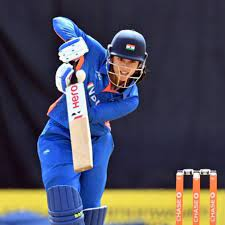

Introduction
Full Name: Smriti Shriniwas Mandhana
Date of Birth: 18 July 1996
Place of Birth: Mumbai, Maharashtra, India
Early Life: Smriti Mandhana, born on July 18, 1996, in Mumbai, India, showed early promise in cricket, honing her skills under her father's guidance and rising through local cricket academies, setting the stage for her future success in the sport.
Cricketing Beginnings: Smriti Mandhana's cricketing journey began in her childhood in Sangli, Maharashtra, where she started playing cricket under the guidance of her father and received initial coaching at the local Maharashtra Cricket Association's academy. Her early talent and dedication laid the groundwork for her future success in the sport.
Early Life and personal life
Mandhana was born on 18 July 1996 in Mumbai to Smita and Shrinivas Mandhana in a Marwari Hindu family. She can fluently speak Marathi having grown up in Maharashtra.
When she was two, the family moved to Madhavnagar, Sangli in Maharashtra, where she completed her schooling. Both her father and brother, Shravan, played cricket at the district-level, for Sangli. She was inspired to take up cricket after watching her brother play at the Maharashtra state Under-16s tournaments. At the age of nine, she was selected in the Maharashtra's Under-15 team. At eleven, she was picked for the Maharashtra Under-19s team.
Mandhana's family is closely involved in her cricketing activities. Her father Shrinivas, a chemical distributor, takes care of her cricket programme, her mother Smita is in charge of her diet, clothing and other organisational aspects, and her brother Shravan still bowls to her in the nets.

Smriti Mandhana's International Career
Virat Kohli's journey in international cricket is a story of relentless determination, exceptional talent, and unwavering commitment to excellence. From his debut in 2008 to his emergence as one of the greatest batsmen of all time, Kohli's international career is marked by numerous milestones, record-breaking feats, and unparalleled success across all formats of the game.
Early Life and Cricketing Beginnings
Growing up in a sports-loving family in Mumbai, Mandhana was introduced to cricket at a tender age under the guidance of her father, Shrinivas Mandhana, himself a former district-level cricketer. Recognizing her innate talent and passion for the sport, Mandhana's father nurtured her cricketing skills, laying the foundation for her future success. Despite the societal challenges faced by female cricketers in India, Mandhana persevered, honing her craft on the streets of Sangli, Maharashtra, and receiving initial coaching at the local Maharashtra Cricket Association's academy.
Mandhana's early years in cricket were characterized by relentless dedication and hard work, as she steadily progressed through the ranks, leaving an indelible mark on the domestic circuit. Her graceful strokeplay and ability to score runs consistently caught the attention of selectors, earning her a coveted spot in the Indian women's cricket team at the young age of 16.
Rise to Prominence
Smriti Mandhana's meteoric rise to prominence came with her international debut for India in April 2013, marking the beginning of a remarkable journey that would redefine women's cricket in the country. Her elegant left-handed batting style, coupled with a fearless approach at the crease, set her apart as a prodigious talent, capable of taking on the best in the world.
Mandhana's breakthrough moment came during the 2013 Women's Cricket World Cup in India, where she showcased her batting prowess with a scintillating century against the formidable Australian team. Her composed innings of 102 runs off 109 balls announced her arrival on the international stage, earning accolades and admiration from cricketing aficionados worldwide.
